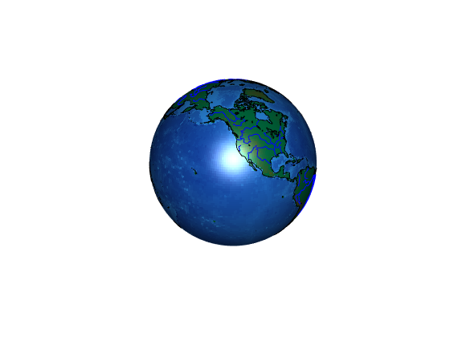

Contents
close all
Current Location
units = [latitude, longitude]
current = [40.7, -74.0];
current = [32, -71]; % coast of florida
Direction
units = radians above 0
direction = 0;
Geography
initialize land here so we dont have to constantly do it
land = shaperead('landareas','UseGeoCoords',true); rivers = shaperead('worldrivers','UseGeoCoords',true);
Timescale
units = minutes per step
time_scale_in_hours = 5; time_scale = time_scale_in_hours*60;
Generate polar plot
polar_plot = polarDiagram(1); polar_plot = polar_plot';
Get Next Direction
direction = get_direction(polar_plot);
Get Next Location
create input struct
next = next_location(polar_plot, direction, time_scale, current, land, rivers);
Display globe
globe = drawGlobe(); globe.Name = 'Globe'; globe.Selected = 'on';
Simulate path
some options
startColor = [69,255,149]./255; endColor = [255,60,59]./255; interColor = [255,232,37]./255; lineColor = [236,243,253]./255; animate = true; debug = true; shift = true; % start simulation geoshow(current(1),current(2),'DisplayType','point','markeredgecolor','y','markerfacecolor',startColor,'marker','o', 'MarkerSize',10) for i = 1:1000 if debug fprintf('Current iteration: %d\n', i); end % update polar plot if shift magnitudes = polar_plot(:, 2); shifted_magnitudes = circshift(magnitudes, randi([0 length(magnitudes)], 1, 1)); shifted_polar_plot = [polar_plot(:, 1) shifted_magnitudes]; polar_plot = shifted_polar_plot; end % update direction direction = get_direction(polar_plot); % plot line between current and next [lttrk, lntrk] = track2('gc', current(1), current(2), next(1), next(2)); plotm(lttrk, lntrk, 'LineWidth', 1, 'Color', lineColor) % update current location current = next; % plot current location geoshow(current(1),current(2),'DisplayType','point','markeredgecolor','y','markerfacecolor',interColor,'marker','o', 'MarkerSize',2) % calculate next point next = next_location(polar_plot, direction, time_scale, current, land, rivers); if animate drawnow end if sum(next == current) > 0 break; end end geoshow(next(1),next(2),'DisplayType','point','markeredgecolor','y','markerfacecolor',endColor,'marker','o', 'MarkerSize',10) [lttrk, lntrk] = track2('gc', current(1), current(2), next(1), next(2)); plotm(lttrk, lntrk, 'LineWidth', 1, 'Color', lineColor)
Current iteration: 1 Current iteration: 2 Current iteration: 3 Current iteration: 4 Current iteration: 5 Current iteration: 6 Current iteration: 7 Current iteration: 8 Current iteration: 9 Current iteration: 10 Current iteration: 11 Current iteration: 12 Current iteration: 13 Current iteration: 14 Current iteration: 15 Current iteration: 16 Current iteration: 17 Current iteration: 18 Current iteration: 19 Current iteration: 20 Current iteration: 21 Current iteration: 22 Current iteration: 23 Current iteration: 24 Current iteration: 25 Current iteration: 26 Current iteration: 27 Current iteration: 28 Current iteration: 29 Current iteration: 30 Current iteration: 31 Current iteration: 32 Current iteration: 33 Current iteration: 34 Current iteration: 35 Current iteration: 36 Current iteration: 37 Current iteration: 38 Current iteration: 39 Current iteration: 40 Current iteration: 41 Current iteration: 42 Current iteration: 43 Current iteration: 44 Current iteration: 45 Current iteration: 46 Current iteration: 47 Current iteration: 48 Current iteration: 49 Current iteration: 50 Current iteration: 51 Current iteration: 52 Current iteration: 53 Current iteration: 54 Current iteration: 55 Current iteration: 56 Current iteration: 57 Current iteration: 58 Current iteration: 59 Current iteration: 60 Current iteration: 61 Current iteration: 62
Error using gcm>checkaxes (line 40)
No axes in current figure.
Select a figure with map axes or use AXESM to define one.
Error in gcm (line 23)
h = checkaxes(varargin{:});
Error in nextmap (line 24)
gcm; % Will error if gca is not a valid map axes
Error in nextmap (line 43)
nextmap
Error in plotm (line 59)
nextmap(varargin)
Error in main (line 67)
plotm(lttrk, lntrk, 'LineWidth', 1, 'Color', lineColor)